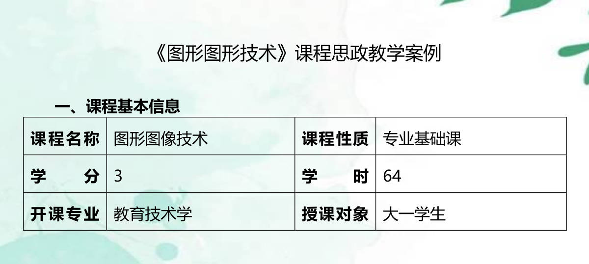

首页
任务汇总
幕后点滴
课堂讲学
在智慧教室进行了以 “认识并制作二维码” 为主题的授课。课程录播与直播同步进行，运用先进设备，生动讲解二维码知识并指导制作，呈现出精彩的教学过程。
查看详情
学术研讨
围绕 “教育技术助力在线教育高质量发展” 展开研讨，通过抖音直播。主持人引导，同学积极互动，得出有益结论，完整记录过程，为在线教育发展提供新思路。
查看详情

教学设计
以 “图形图像技术课程思政教学设计” 主题，进行思政教学案例设计。巧妙融入思政元素，实现知识与思政教育结合，提升课程育人价值与效果。
查看详情
拍摄剪辑
精心拍摄并细致剪辑课堂教学及学术研讨过程。最终完成的视频清晰展现实训全貌，涵盖关键内容与特色环节，完美呈现整个实训过程。
查看详情
网站制作
制作网站展示实训课成果，页面设计精美，内容包含课程设计、研讨详情等。以清晰直观的方式呈现，方便师生查看交流，有效总结经验，促进教学水平提升。
查看详情